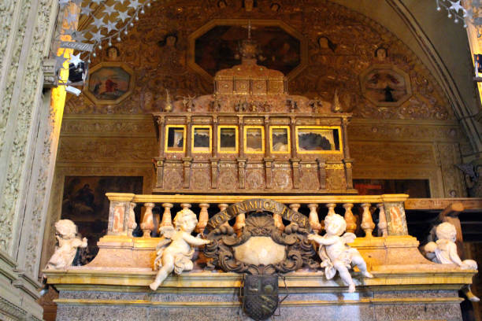
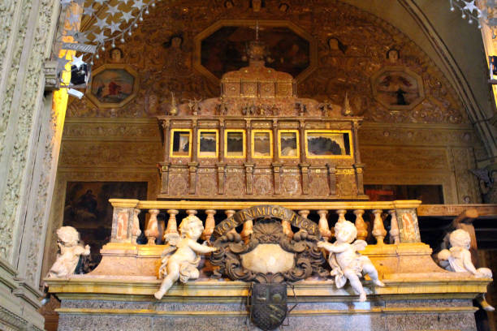

×
×
Saint Francis Xavier tomb is located in Church named Basilica of Bom Jesus. The church was declared as the World Heritage Site by United Nations Education, Scientific and Culture Organisation (UNESCO) in the year 1986. The Basilica of Bom Jesus is located in the State of Goa This magnificent edifice stands as a superb example of Baroque architecture in Goa. The church is called “Bom Jesus” meaning 'good Jesus' or 'infant Jesus' to whom it is dedicated. The façade has on it, at the top, the letters, “HIS” which are the first three letters of Jesus in Greek
The Basilica of Bom Jesus is located in Old Goa, India. It is famous for housing the mortal remains of St. Francis Xavier. Typically, the timings for visiting the Basilica of Bom Jesus are as follows:
×


 


By Road
The nearest bus station to the Basilica of Bom Jesus in Old Goa, India, is the Old Goa Bus Station, also known as the Kadamba Bus Station. It's located within walking distance from the Basilica, making it a convenient transportation option for visitors.

By Train
The nearest railway station to the Basilica of Bom Jesus in Old Goa, India, is the Karmali Railway Station. It is situated approximately 10 kilometers away from the Basilica. From Karmali Railway Station, you can take a taxi or a local bus to reach the Basilica

By Air
The nearest airport to the Basilica of Bom Jesus in Old Goa, India, is the Dabolim Airport (also known as Goa International Airport or simply Goa Airport). It is located approximately 29 kilometers away from Old Goa